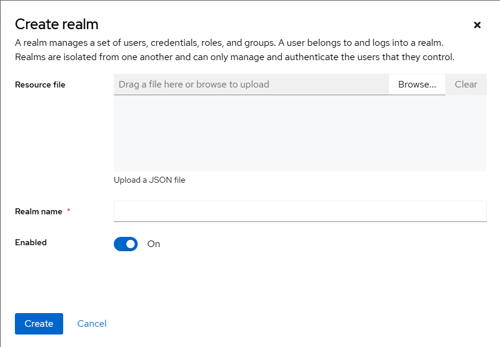
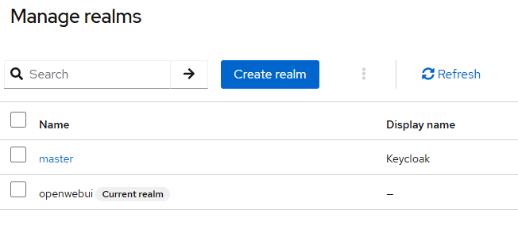
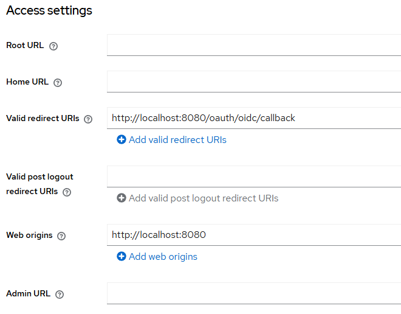
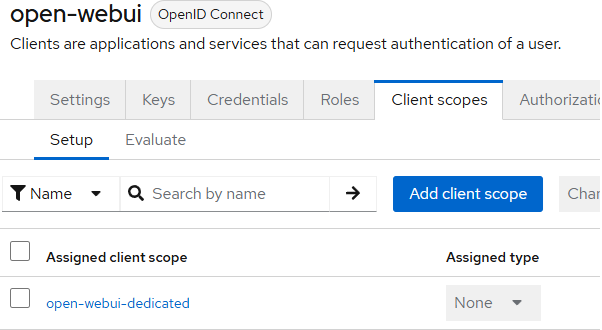
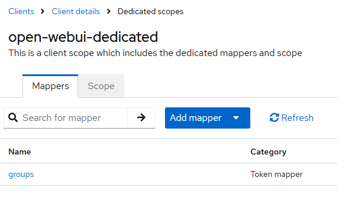

Integração de keycloak
Este tutorial é uma contribuição da comunidade e não é suportado pela equipe Open Webui. Serve apenas como uma demonstração sobre como personalizar o Open Webui para o seu caso de uso específico. Quer contribuir? Confira o tutorial contribuinte.
Este guia explica como integrar o Open Webui com o keycloak para OIDC Single Sign-On (SSO).
1. Preparação do ambiente e mudança de porta
Porta do servidor Webui abre WebUi
- Porta padrão
8080
Keycloak porto em questão de conflito
Keycloak também usa porta8080Por padrão, o que causa um conflito. Altere a porta keycloak para9090
bin/kc.sh start-dev--http-port = 9090
2. Crie um reino keycloak
- Abra seu navegador e vá para
http://localhost:9090. Crie uma conta de administrador. - Faça login no console do administrador em
http://localhost:9090/admin - Do suspensão do reino no topo, cliqueAdicione o reino
- Digitar
openwebuiComo oNome do reinoe cliqueCriar

3. Crie um cliente OpenID Connect
Certifique -se de selecionar oopenwebuireino. O padrão émaster

- Garanta o
openwebuiReino que você acabou de criar é selecionado. - No menu esquerdo, cliqueClientesCriar cliente
- DefinirID do clientepara
open-webui - ManterProtocolo do clientecomo
openid-connect - DefinirTipo de acessopara
confidentiale cliqueSalvar

4. Habilite a autenticação do cliente e obtenha credenciais
Por padrão, o keycloak 26.x define a autenticação do cliente como "nenhum", por isso precisa ser configurado manualmente.
- Vá paraClientesOpen-WebuiConfigurações
- Verifique oAutenticador de clientesuspenso.
- Mudar "nenhum" paraID do cliente e segredoe cliqueSalvar
- Clique noAvançadoguia.
- NoAutenticação do clienteSeção, clique emRevelar segredoe copie o segredo.
- Cole este segredo no
OAUTH_CLIENT_SECRETvariável em seu.envarquivo.
5. Crie um usuário de teste
- No menu esquerdo, vá paraUsuáriosAdicionar usuário
- Preencha oNome de usuário, Assim,E-mail, etc., e cliqueSalvar
- Clique no usuário recém -criado e depois vá para oCredenciaisguia.
- Digite uma nova senha, desmarqueTemporárioe cliqueDefina a senha
- Exemplo: nome de usuário
testuser, SenhaTest1234!
- Exemplo: nome de usuário
6. Configure o Open Webui .env
Adicione ou modifique as seguintes variáveis em seu.envarquivo.
# Ativar login OAuth2/OIDC
Enable_oauth_signup = true
# Informações do cliente keycloak
OAuth_Client_Id = Open-Webui
Oauth_client_secret = <your_copied_secret>
# OIDC Discovery Document URL
OpenId_Provider_url = http: // localhost: 9090/realms/OpenWebui/.well-conhecida/OpenId-Configuration
# (Opcional) rótulo de botão SSO
Oauth_provider_name = keycloak
# (Opcional) URL de retorno de chamada OAuth
OpenId_redirect_uri = http: // localhost: 8080/oauth/oidc/retorno de chamada
Reinicie o servidor aberto da webui depois de modificar o.envarquivo.
7. HTTP vs. HTTPS
- HTTP (Desenvolvimento/Teste)
- Esquema:
http:// - Exemplo:
http://localhost:9090
- Esquema:
- HTTPS (Produção recomendada)
- Requer configuração KeyCLoak TLS ou um proxy reverso com terminação SSL.
bin/kc.sh start--https-port = 9090 \
--https-key store = keystore.jks \
--https-key-store-password = <dasty>
8. Teste a integração
- Vá para
http://localhost:8080. Você deve ver um botão "Continuar com keycloak". - Clique no botão. Você deve ser redirecionado para a página de login do keycloak.
- Faça login com
testuserTest1234!. Você deve ser redirecionado com sucesso de volta para abrir o Webui.
9. Configurar o mapeamento do grupo KeyCloak
9.1. Visão geral
Por padrão, os clientes KeyCloak não incluem informações de grupo em tokens. Siga estas etapas para passar informações do grupo.
9.2. Localize a criação do mapeador
-
Vá para o KeyCloak Admin Console:
http://localhost:9090/admin -
Selecione o
openwebuireino. -
Navegar paraClientese selecione o
open-webuicliente. -
Vá para oEscopos de clientesguia.
-
Selecione o escopo que conterá as informações do grupo (por exemplo,,
profileouopen-webui-dedicated
-
Nos detalhes do escopo selecionado, vá para oMappersguia.
9.3. Crie mapeador
CliqueCriarouAdicione embutidoPara começar a criar um novo mapeador.
9.4. Configurações de mapeador
Configure o mapeador com as configurações apropriadas para incluir a associação ao grupo.

9.5. Salvar e aplicar
- Salvara configuração do mapeador.
- Reiniciaro servidor Open Webui para aplicar as alterações.
9.6. Configurar variáveis de ambiente aberto webui
Adicione ou modifique essas variáveis em seu.envarquivo:
# Ativar sincronização do grupo
Enable_oauth_group_management = true
# (Opcional) Ative a criação de grupo just-in-time
Enable_oauth_group_creation = true
# A chave de reivindicação para grupos no token
Oauth_group_claim = grupos